项目课程(3) 花鸟玉雕设计与制作
在玉器琢磨中，治玉者在很大程度要进行“化腐朽为神奇”这方面的思考，因为真正完美无瑕的玉是非常少的，而大部分的玉料都存有瑕疵，如杂质、色斑、裂纹、“棉绺”等，通过作者的奇思妙琢，不仅使观赏者对瑕疵“视而不见”，还要使玉器作品产生意想不到的艺术效果，本章通过花鸟玉器工艺来揭示“化腐朽为神奇”的琢磨方法。 学习目标： 1.掌握花鸟玉器的因料设计：去裂藏裂、变瑕为瑜 2.了解花鸟玉器的形式美感 3.熟悉花鸟玉器的工艺要求 4.掌握花鸟玉器的琢磨工艺 教学要求： 通过本章花鸟玉器的案例分析和花鸟玉器的琢磨实训，使学员能理解、掌握“去裂藏裂、変瑕为瑜”的设计方法；能掌握花鸟玉器的造型特点；能熟悉花鸟玉器的工艺要求；能进一步掌握玉器的圆雕、浮雕、透雕、线刻、等工艺技巧以及不同工具的使用方法；同时进一步加深对民族图案和民族文化的理解，以及设计和创新意识的培养。 实践项目： 花鸟玉器设计和制作 一、花鸟玉器因料设计 在第三章“依势造型、俏色巧作”的基础上，设计将进一步深化，通过花鸟玉器的工艺琢磨引申出“去裂藏裂、变瑕为瑜、”的琢玉方法。 1.玉料的察看、分析、判断 玉料分析始终是玉器设计前提，每一次察看、分析、判断玉料的实践，是“相玉”经验的积累。 2.去裂藏裂 裂纹是玉料中最为常见的毛病。横向的裂纹比较浅，在雕琢时容易去掉；而纵向的裂纹比较深，不易去掉。因此，去裂、借裂、藏裂是琢玉常思考的问题而又费神的问题。 裂纹是琢玉的不利因素，在琢磨中要加以重视和利用。如果构思由此而起，砣轮顺裂而下，裂纹完全可以成为形象之间的分割线和形象的边缘线，运用得好，也许料形将更显俊俏，成为玉器琢磨中特殊的表现语言。 如：玉作富贵图，在利用裂痕上有着独到的之处，（图4-1-1）原玉料上方有一条斜长而深的裂痕，如在裂痕处断开，玉料将会削去三分之一，料体会小的很多，而且造型也不完美，经过作者深思，还是保留裂痕，这样，构思就由裂痕而起，渐渐的裂痕成了花蕾含苞欲放的开合之处，富贵图的造型油然而生（图4-1-2）。  图4-1-1 籽玉原料 图4-1-1 籽玉原料 图4-1-2 籽玉 富贵图 赵丕成设计制作 图4-1-2 籽玉 富贵图 赵丕成设计制作玉石中的瑕疵是自然形成的，而且变化异常，治玉要因势利导，巧妙经营，使自然的玉料得到顺其自然的琢磨，化不利因素为有利因素。 花鸟玉器设计题材广泛，形式千变万化，我们还是要根据自己手中的玉料因料设计，因材施艺，选择最为合适的题材和形式赋予玉料之中。 3.变瑕为瑜 玉器琢磨要使玉质在最大程度上体现出它的美感，应在基本不影响料体块度的前提下去掉瑕疵，使玉料纯净。而有些瑕疵是深层的，不易看见，无法去尽，这就需要在琢玉中加以随机应变，合理调整，巧妙变通。也许小黑斑可以成为太湖石的虚空或河水的漩涡；而零星的黑点加以连线，不就成了灵动的流水、流云、蔓藤等，这完全是有可能的。琢磨方法取决于作者对玉的理解，以及和所要表达的意蕴相吻合。 如：玉作秋荷月影，原本是一枚不被看好的籽玉（图4-1-3），料体上原是包裹着厚厚的灰色和黑斑，由于在其设计上进行了大胆、巧妙的构思，将白灰玉色雕琢成了一轮圆月，似流云飘绕，月色朦胧；而圣洁莹透的莲花脱尽了“污泥浊水”，亭亭玉立，一尘不染；再将籽料斑驳的大片铁锈红皮色雕琢成荷叶，寓意秋意正浓。秋荷月影玉作用“变瑕为瑜”的设计方法，将有碍为有利，变累赘为妙着，化腐朽为神奇巧。秋荷月影玉作在奇思妙琢中诞生出“清水出芙蓉”的圣洁、温润和美丽（图4-1-4）。 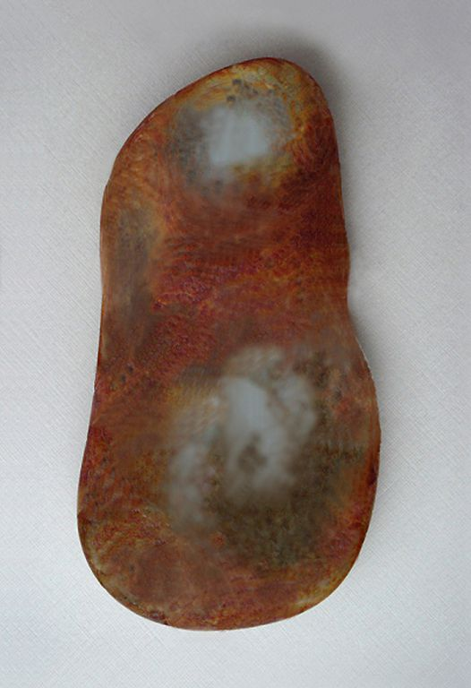图4-1-3 籽玉原料
 图4-1-4 籽玉 秋荷月影 赵丕成设计制作 图4-1-4 籽玉 秋荷月影 赵丕成设计制作二、花鸟玉器形式美感 花鸟玉器在琢磨过程中由于造型的需求和不同工具的使用，出现了线、面、体的语言，它们虽然是一个有机的整体，但也各自表现出特有的形式美，因此对琢磨也有着不同的相对应的要求。 1.线之有形有情 线的语言在花鸟玉器上的表现非常重要，所展现的线形砣痕、刀法也是多样的。一般用压砣表现树根线形的古拙和劲健，用扎（钉）砣表现花蕾、花瓣、叶片线形的圆润和力度；用勾砣去表现出植物细藤、叶脉和禽鸟鸟羽毛的丝丝游动、细腻娟秀。有“形”有“情”的琢玉线条既能表现形象的造型，亦能表现出不同对象的凝重、优雅和飘逸，这全凭琢玉者手腕运行的轻重缓急，以及精炼、清晰、流畅的线形运用。 ① 线形化、装饰性 玉器虽然是立体的，但是，在形体雕琢时完全用线形来塑造的。线可使造型、纹饰显得生动、清晰并富有装饰性。线形首先表现为花鸟玉器的外轮廓线，器型的稳健、优雅和动势，一定和连续、优美的线形有关。若是具体的形象，则更有着劲健或柔和、粗短或修长、生动而多变的线纹。线要求流转、通脱，每一根线条的来龙去脉都要交待清楚，不能有突然的起头和结束，这些尽在运砣的深浅、转折、进退的掌控之中。 ② 线脚清晰精到 一件花鸟玉器的工艺到位与否在很大程度上是要看线脚是否清晰，死角是否理清。线脚是根据不同形象而随形沿走的，有时深琢有时浅淌，有的修长，有的短促。虽属细微末节，施艺也要面面俱到，因为它正是鉴别玉器做工的看点之一。 2.面之光挺柔顺 花鸟玉器中有很多形态的面，有光素的抛面、板直的平面、转折的棱面，琢磨时运砣平稳，磨面便能光挺柔顺，不留砣痕。圆转起伏、陡峭挺拔、大小各异的表面，要求施艺过程爽快肯定、干净利索。 3.体之浑然圆润 “圆润”是玉器之温润美。这不仅是由材料决定的，还与圆型的工具有关。一般应避免折角、锐角，即使是方的形器也要方中带圆。切记，玉形处于“浑然圆润”的状态时，能够最大程度体现出玉性的美感。而玉器是由大大小小的线体、面体组成的，因此，琢磨时要保持玉的饱满度，过于纤细、锐利、透薄的雕琢都会使玉质失去圆润感或变得“枯萎”。因此，无论是琢磨大的形体还是小的形体，都要保持玉形的浑厚、饱满、圆润，从而体现玉质的温润、莹透、浑然之美。 以上线、面、体的琢玉造型语言，在花鸟玉器上，得到了广泛的运用，使不同的花鸟形式有着完美和贴切的表现（图4-2-1至图4-2-11）。  图4-2-1 商代晚期 玉燕 图4-2-1 商代晚期 玉燕 图4-2-2 唐代 白玉花卉纹梳子背 图4-2-2 唐代 白玉花卉纹梳子背 图4-2-3 金代 白玉雕鹘捉鹅图 图4-2-3 金代 白玉雕鹘捉鹅图 图4-2-4 元代 龟鹤纹饰 图4-2-4 元代 龟鹤纹饰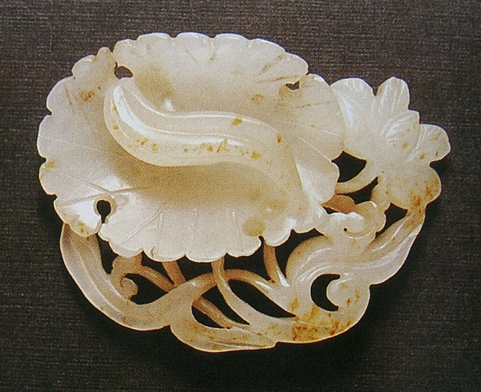图4-2-5 宋代 莲花玉佩
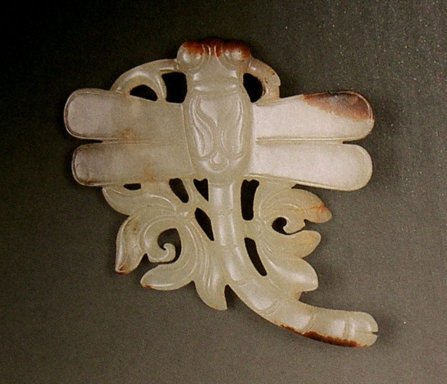图4-2-6 明代 白玉雕 亭亭玉立佩
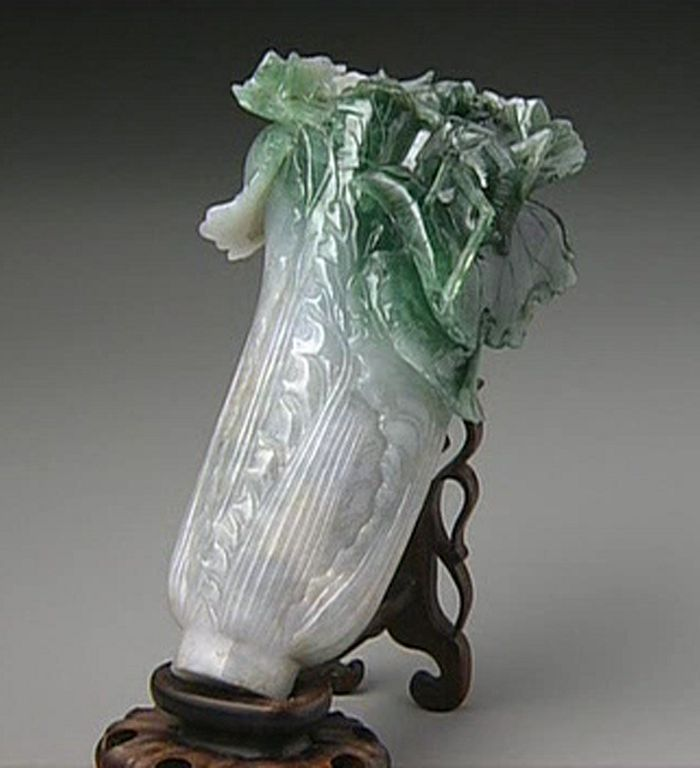图4-2-7 清代 翡翠 白菜
 图4-2-8 清代 玉凤 图4-2-8 清代 玉凤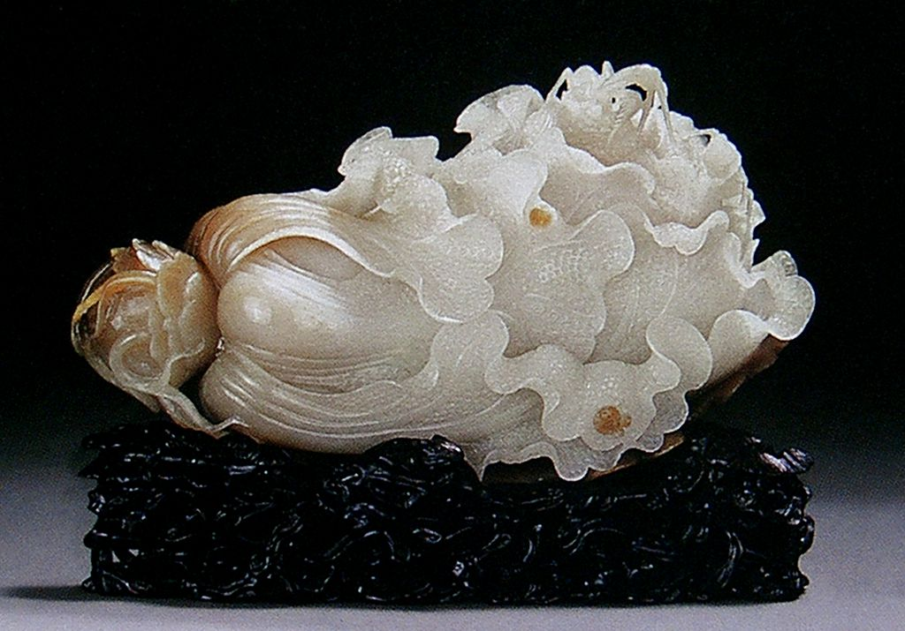图4-2-9 近代 白玉白菜
 图4-2-10 独山玉 玉兰双鸟 上海玉雕厂设计制作 图4-2-10 独山玉 玉兰双鸟 上海玉雕厂设计制作 图4-2-11 玛瑙 冠上加官 作者：韩荣昌 图4-2-11 玛瑙 冠上加官 作者：韩荣昌三、花鸟玉器工艺要求 琢玉的工艺技巧虽然在不同的题材和形式中其琢磨方法基本相似，但是在具体的样式中有着独特的表现和要求。 1.走——贴切挺顺 压砣和扎砣“走”砣的运用一般是在花鸟形象的外延或者较浅的位置。“走”出花鸟的形态；“走”出花鸟的线感；“走” 出柔和的抛面和挺括的棱面等，一切在贴切挺顺之中运行。 2.压——平整顺畅 “压”出羽毛的层次；“压”出花瓣的柔美；“压”出藤蔓的力感。“压”的砣痕虽然有高低起伏、迂回转折，然而，平整顺畅是运砣的要求。 3.淌——匀净柔和 压砣、蛋形砣在叶片、羽毛等边缘随形轻轻地“淌”过，留下了浅浅的弧面给玉器造型增添了优雅的气质和特有的韵味。 4.扎——遒劲有力 “扎”的砣痕在花瓣间、在羽毛间、在形象间，线感强劲，富有弹性。在玉器造型中有较强的表现力。 5.勾——流畅利落 “勾”的砣痕细腻、流畅，如须毛、叶脉、纹饰等，是玉器琢磨的提神之笔。 琢玉技巧的精湛和优美，是在不断的实践中逐渐提高的，我们要在琢玉中去细细体会不同的琢玉刀法、把握运砣的方法，给花鸟玉器增添特有的琢玉美感。在下列花鸟玉图中去细细品味其中的技巧和刀法（图4-3-1至图4-3-8）。  图4-3-1 白玉 安居乐业 （神工奖最佳工艺奖） 赵显志设计制作 图4-3-1 白玉 安居乐业 （神工奖最佳工艺奖） 赵显志设计制作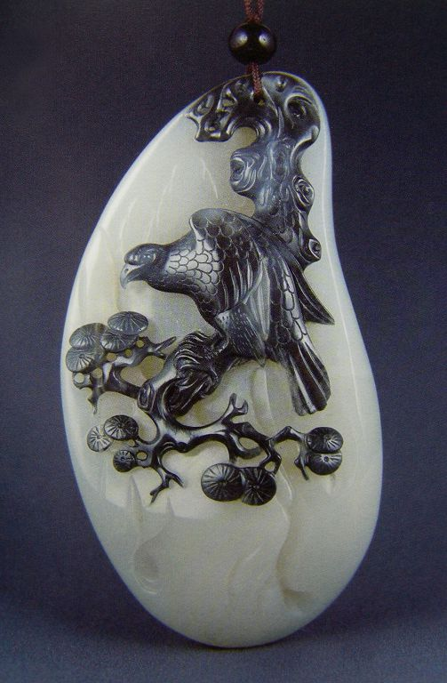图4-3-2 玉佩 志在千里 作者：赵显志
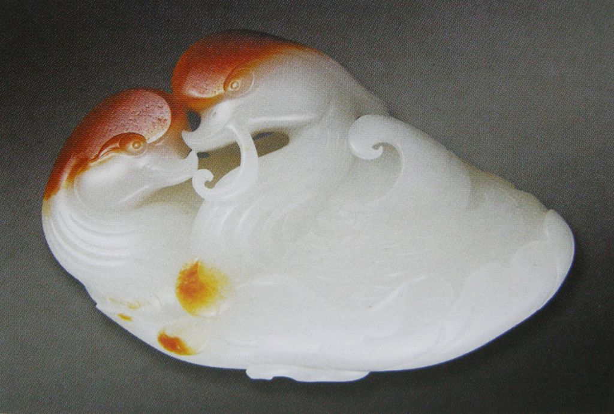图4-3-3 白玉 恩爱相依 作者：吴灶发
 图4-3-4 白玉 极目寰宇 作者：刘国皓 图4-3-4 白玉 极目寰宇 作者：刘国皓 图4-3-5 独山玉 国色天香（第四届“陆子冈杯”玉雕精品展优秀作品奖） 作者：刘晓强 图4-3-5 独山玉 国色天香（第四届“陆子冈杯”玉雕精品展优秀作品奖） 作者：刘晓强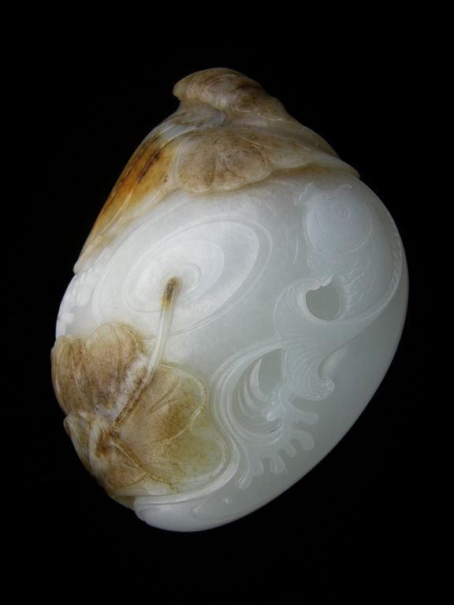图4-3-6 籽玉 荷塘清趣 赵丕成设计制作
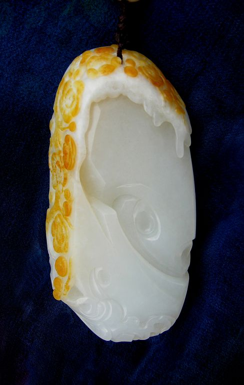图4-3-7 籽玉 冰清寒香 赵丕成设计制作
 图4-3-8 籽玉 玉凤 赵丕成设计制作 图4-3-8 籽玉 玉凤 赵丕成设计制作四、花鸟玉器工艺过程 花鸟玉器的工艺流程和瑞兽玉器的工艺流程基本相似，再次重复玉器琢磨过程将会更加熟悉和全面掌握玉器工艺制作步骤，提高制作技能。 案例1.花型玉器制作过程 ① 勾线画稿 根据玛瑙的造型和花形的姿态立体的把图形画在材料上（图4-4-1）。  图4-4-1 勾线画稿 图4-4-1 勾线画稿② 块体出坯 使用斩砣块面的斩出花的造型（图4-4-2）。 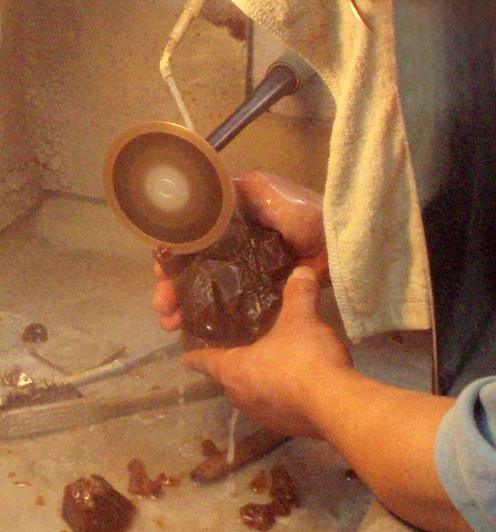图4-4-2 细砂出坯（斩砣出坯）
③ 对照画稿 尽可能从大的块面到小块面，完整的斩出花的造型和姿态（图4-4-3）。  图4-4-3 细砂出坯（斩砣出坯） 图4-4-3 细砂出坯（斩砣出坯）④ 形体粗磨 使用不同的工具磨去块面的棱角，琢磨出花的整体造型和姿态（图4-4-4）。  图4-4-4 粗砂磨坯 图4-4-4 粗砂磨坯⑤ 精雕细琢 使用不同的工具仔细、精心的琢磨，使花瓣表面光挺、细腻，并且雕琢出花瓣边缘的转折以及各细部的变化（图4-4-5）。  图4-4-5 细砂了手（精工细琢） 图4-4-5 细砂了手（精工细琢）案例2.玉凤醉舞制作过程 这件凤鸟玉器的出坯基本上不用斩砣工具，可直接用压砣、扎眼、杠棒等工具进行大体磨出凤鸟的造型。 ① 整体凤鸟的构图画好以后，从头开始雕琢（图4-4-6）。 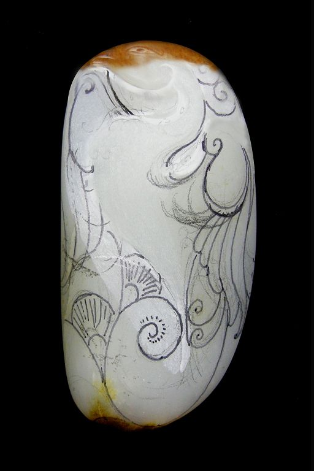图4-4-6
② 头部基本确定，雕琢逐渐延伸到身体和翅膀部分（图4-4-7）。 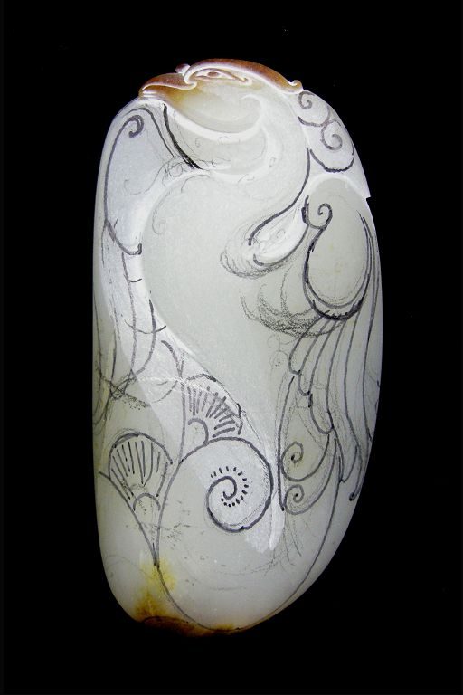图4-4-7
③ 左翅膀基本确定（图4-4-8）。 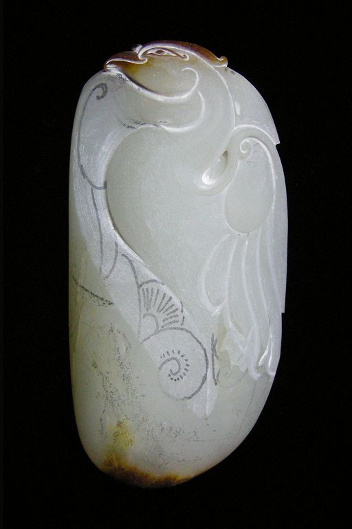图4-4-8
④ 右翅膀裂痕去掉，位置确定，层次拉开（图4-4-9）。  图4-4-9 图4-4-9⑤ 右翅膀进一步深化，层次感加强，腿脚、尾羽位置确定（图4-4-10）。  图4-4-10 图4-4-10⑥ 腿脚、尾羽进一步深化，立体感表现（图4-4-11）。 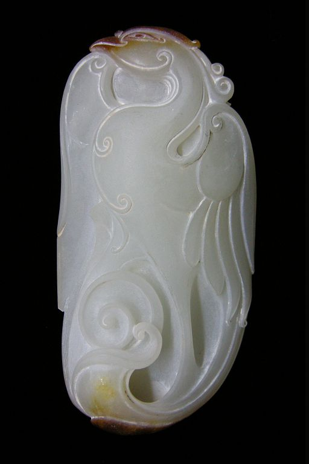图4-4-11
⑦ 右翅膀细化，整体细化描写，玉凤基本完成（图4-4-12）。  图4-4-12 图4-4-12⑧ 头部下瑕疵雕空，并打磨完工(图4-4-13)。  图4-4-13 籽玉 玉凤醉舞（正面） 赵丕成设计制作 图4-4-13 籽玉 玉凤醉舞（正面） 赵丕成设计制作⑨ 背面尾羽的巧色利用，形态简洁，线条流畅(图4-3-14)。 在整体的雕琢中，努力表现出玉凤醉意正浓、慢步起舞的姿态， 其中包括色泽的巧妙利用，线面的经营安排，动态的飘然优雅，达到造型整体浑然，凤鸟气韵生动的艺术效果。  图4-4-14 玉凤醉舞（反面） 图4-4-14 玉凤醉舞（反面）案例3.玉凤墨牡丹制作过程 ① 去瑕疵 整料形 图4-4-15 这是一枚黑白相间的玉料，首先使用斩砣去掉不好的部分，再进行构思……  图4-4-15 图4-4-15② 勾线画稿 图4-4-16 把白色部分画成凤鸟，黑色部分打算雕琢成墨色牡丹。 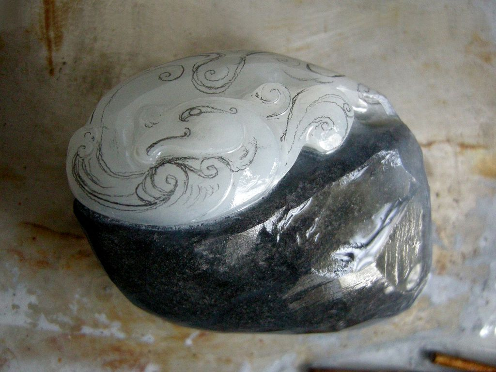图4-4-16
③ 形体粗磨 图4-4-17在这件玉作的岀坯上斩砣用的不多，而大部分用的是压砣、扎眼、杠棒等工具进行凤鸟和牡丹的大体岀坯和形体粗磨。 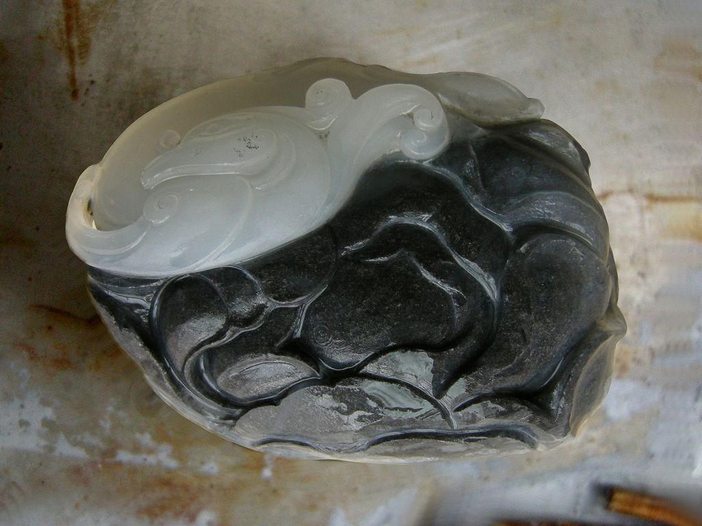图4-4-17
④ 精雕细琢 图4-4-18 根据凤鸟和牡丹的造型进行细化，凤鸟形体简洁，线条灵动；牡丹形态含苞欲放，雍容华贵，二者分和得体。  图4-4-18 图4-4-18⑤ 打磨效果 图4-4-19 洁白凤鸟，墨色牡丹，通体光泽细腻柔和，手感温润。 图4-4-19 黑白玉 玉凤墨牡丹（神工奖最佳创意奖） 赵丕成设计制作 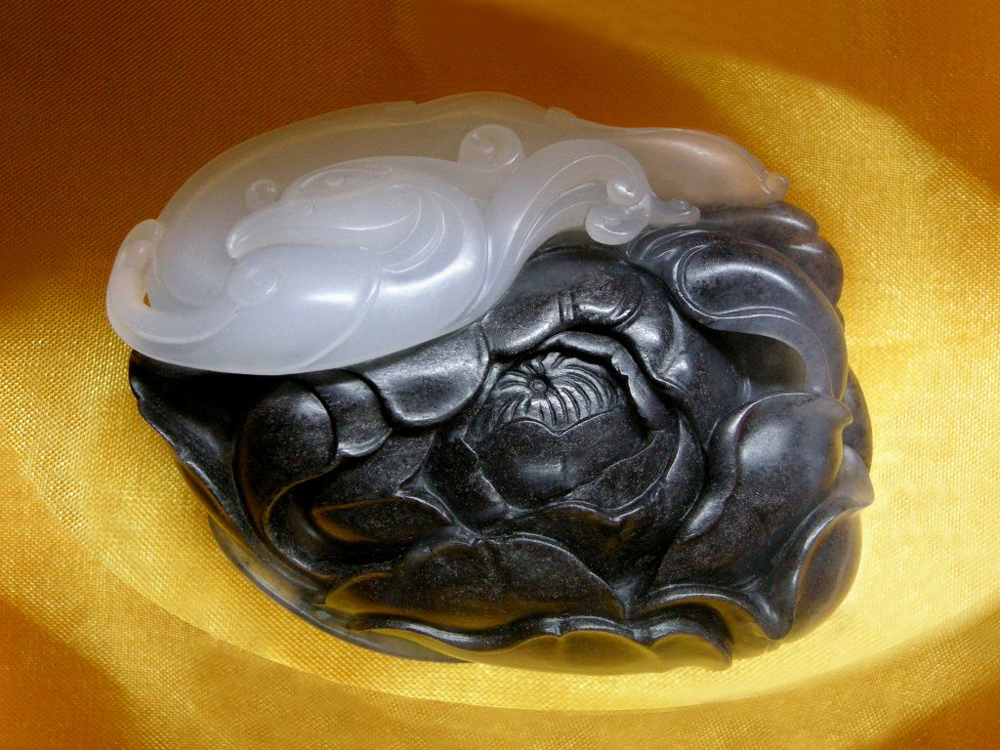图4-4-19
⑥ 背面造型 图4-4-20 背面线形的简练造型同样富有美感。 图4-4-20 玉凤墨牡丹（背面） 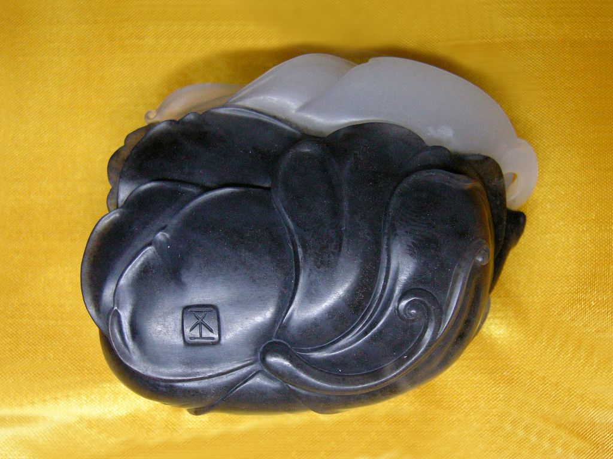图4-4-20
实训项目和思考练习： 1.设计、制作花鸟玉器1件。 2.阅览、临摹白描工笔花鸟画。 3.阅览、临摹花鸟吉祥图案。 |